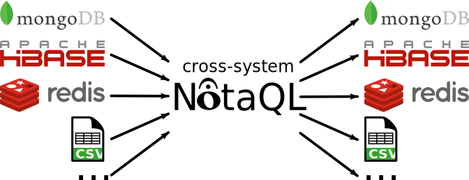

NotaQL's Not a Query Language
It's a cross-system data transformation language that allows to perform concise transformations between lots of different systems.

Examples
Page Impressions Counter
In real systems it is often necessary to extract hot data from your main database into a faster one. This is where key-value stores have their main benefits when compared to stores with more complex data models.
If for example our product catalog is stored in HBase, we might want to track page impressions in Redis. At some point however you want to transfer the current state of the page impression counter back to HBase. The reason for that could be that this grants us to only have one database hit instead of two when loading a product page.
Redis Input
| Key | Value |
|---|---|
| plate | 1100 |
| table | 25000 |
NotaQL Transformation
OUT._id <- IN._k,
OUT.info.company <- IN._vMongoDB Output
{
"_id": "plate",
"price": 4,
"info": {
"company": "WFM",
"views": 1100
}
}
{
"_id": "table",
"price": 480,
"info": {
"company": "Eikia",
"views": 25000
}
}Aggregation
Other tasks may include aggregating data. For example we might be interested in the average number of views of products of the companies. Let's say the result shall be stored in HBase.
MongoDB Input
{
"_id": "plate",
"price": 4,
"info": {
"company": "WFM",
"views": 1100
}
}
{
"_id": "knife",
"price": 20,
"info": {
"company": "Eikia",
"views": 15000
}
}
{
"_id": "table",
"price": 480,
"info": {
"company": "Eikia",
"views": 25000
}
}HBase Output
| Row | avg_views |
|---|---|
| WFM | 1100 |
| Eikia | 20000 |
NotaQL Transformation
OUT._r <- IN.info.company,
OUT.avg_views <- AVG(IN.info.views)Community
Please use our IRC or mailing list for getting in touch on development and support.
- #notaql on irc.freenode.net
- notaql@googlegroups.com
About
This project is a research prototype created at the Heterogeneous Information Systems Group at the Technical University of Kaiserslautern. The framework was written by Thomas Lottermann during his work for his master's thesis with Johannes Schildgen being his supervisor. We open sourced it in order to allow new contributors to add new features, bug fixes, or simply use it for their own purposes.